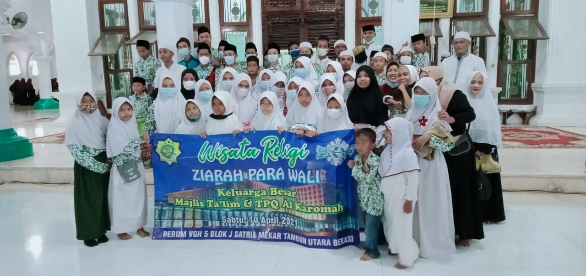

IRMAS AL-HIDAYAH
Wisata Religi: Ziarah Ke Makam Para Wali
Bekasi, 25/04/2022 - Menurut Dosen Ilmu Sejarah Universitas Airlangga Purnawan Basundoro, ziarah merupakan tradisi unik yang usianya sudah sangat tua di Indonesia. Umumnya, selain ziarah ke kubur leluhur, kini ziarah kerap dijadikan salah satu daya tarik wisata, yakni wisata religi. Bulan Zulhijjah kerap dijadikan momentum untuk melakukan perjalan spiritual bagi umat Islam. Salah satu daya tarik wisata religi di Indonesia adalah ziarah ke makam para wali. Hal ini dilakukan sebagai bentuk mengenang para teladan dalam mengajarkan dan menyebarkan ajaran Islam di Indonesia.
Mereka adalah para wali yang mencintai Allah dan dicintai oleh Allah. Mereka dianggap sebagai ketua mubaligh islam pada waktu itu untuk berdakwah dan syiar mengenai slam. Para wali yang menyebarkan agama islam di Jawa pada saat itu, namun meluas sampai seluruh wilayah Indonesia. Hal ini dikarenakan murid-murid para wali yang berguru ke pesantren mereka, berasal dari berbagai wilayah di seluruh Indonesia. Para wali yang berasal dari Jawa atau keturunan Jawa, seringkali dikaitkan dengan legenda-legenda mistik. Sementara itu para wali yang asli Timur Tengah tidak banyak dikisahkan dalam legenda-legenda mistik di dalam legenda ini. Pengertian karomah adalah memiliki kesaktian mandraguna. Namun dalam Islam karomah adalah taqwa kepada Allah dan mendapatkan kekuatan itu atas ijin-Nya. Setiap orang memilki kelebihan masing-masing, namun dalam tingkatanya dapat dirangkum seperti berikut: Mukjizat adalah kelebihan yang dimilki para Nabi. Karomah adalah kelebihan yang dimiliki para Wali. Maunah adalah kelebihan yang dimiliki orang-orang Mukmin. Begitu hebatnya penghormatan rakyat kepada para wali dapat kita lihat dari beberapa legenda dalam bentuk cerita atau dongeng yang kadang-kadang tidak masuk akal karena penuh dengan misteri dan kesaktian. Namun keberadaan para wali ini membuat kita paham akan susahnya dan jerih payah mereka dalam mengajarkan islam ke tanah Jawa dan menyebar ke seluruh Indonesia. Sudah menjadi agenda rutin tahunan IRMAS AL-HIDAYAH untuk berziarah ke makam para wali, di bulan Zulhijjah. Berikut beberapa potret kegiatan kami selama berkunjung ke beberapa tempat makam para wali yang ada di daerah Jakarta. Selengkapnya
KEGIATAN KAMI